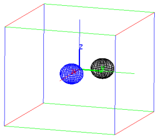

26.1.6 New images from existing ones
The () operator can be used to create image objects
from an existing one. With an image object img:
-
img(grey) returns a copy of img converted to grayscale.
- img(α), where α is
a positive real number, returns a copy img with size scaled to α w× α h.
- img(w,h) returns a copy of img resized to w× h
(possibly changing the aspect ratio).
- img(x,y,w,h) returns a new image corresponding to the portion
of img with dimensions w× h and the upper left corner at (x,y).
Note that img is unaffected by the above operations.
Examples
Assume that the image terre.jpg (see Section 26.1.4) is loaded
to the variable img. Then:
| cropped:=img(220,20,100,100) |
|
| |
an image of size 100×100 (RGB)
| | | | | | | | | | |
|
| display(cropped,0); display(cropped(grey),120) |
| title:="resized from 512 x 256 to 102 x 51"; display(img(0.2)) |
